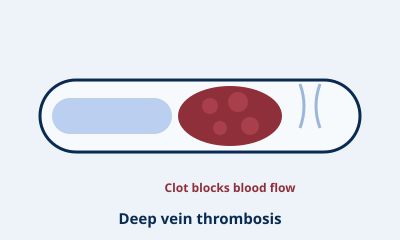

Overview
Deep vein thrombosis (DVT) is a blood clot that forms in one of the deep veins, most often in the calf or thigh. It can cause pain and swelling, and if part of the clot breaks free it can travel to the lungs — a pulmonary embolism — which is potentially life-threatening.
Prompt diagnosis and treatment relieve symptoms and greatly reduce the risk of complications.
Symptoms
- Swelling in one leg (or arm)
- Pain or tenderness, often in the calf
- Warmth and redness over the area
- Sudden breathlessness or chest pain — a possible clot on the lung, requiring emergency care
Causes & risk factors
- Long periods of immobility (long-haul travel, bed rest)
- Recent surgery or injury
- Inherited or acquired clotting disorders
- Cancer and some of its treatments
- Pregnancy and hormonal medications
Treatment options
DVT is usually managed medically, with more active treatment in selected cases:
- Anticoagulation (blood-thinning medication) to stop the clot growing and prevent new clots
- Compression stockings to reduce swelling
- Clot-dissolving treatment (thrombolysis) or clot removal in severe cases
- Investigating and treating the underlying cause
What to expect
If a DVT is suspected, an urgent ultrasound confirms the diagnosis. Treatment usually begins quickly to protect you from complications, followed by a plan to prevent further clots. If you have sudden breathlessness or chest pain, call 000.
This information is general and is not a substitute for medical advice. Please see Dr Wong for advice about your individual situation.